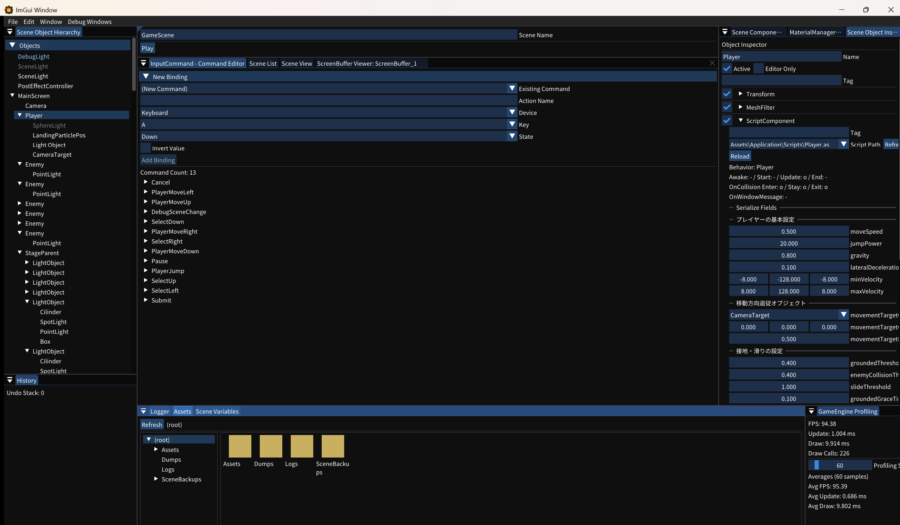

11. アセットを読み込む
Assets ウィンドウを使い、プロジェクトに含まれる画像・マテリアル・スクリプト・プレハブを探して利用します。

1. Assets ウィンドウを開く
- メニューバーから Window → Assets を選択します。
- 左のツリーで
Assets/Applicationを選択します。 - 右側のフォルダーをダブルクリックして目的のアセットへ移動します。
2. アセットを確認・割り当てる
ファイルをダブルクリックすると、対応する編集またはプレビュー画面が開きます。用途に応じて次の操作を使います。
- スクリプト（.as）: ScriptComponent の Script Path へドラッグ＆ドロップ
- テクスチャ: 対応するテクスチャ欄へドラッグ＆ドロップ
- マテリアル（.mat）: Renderer のマテリアル欄へドラッグ＆ドロップ
- プレハブ（.prefab）: Scene View または Hierarchy へドラッグ＆ドロップして配置
3. フォルダーの役割を把握する
| 場所 | 用途 |
|---|---|
Assets/直下 | ゲーム固有の Image、Model、Sound、Scripts など。シーン一覧（SceneList.json）と入力設定（InputCommand.json）もここに置かれます |
Assets/KashipanEngine/ | エンジンの既定画像、フォント、翻訳、パイプライン設定など。新規プロジェクト作成時に AssetsTemplate/ からコピーされます |
エンジン API から直接ロードする場合は、パスから各マネージャーのハンドルを取得してコンポーネントへ設定します。対応形式と API は アセットのリファレンス を参照してください。